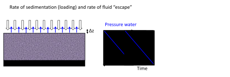
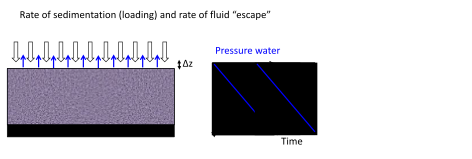
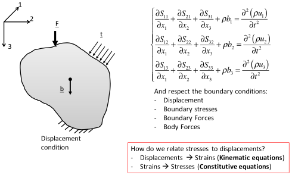

Next: Constitutive equation: stress-strain relationships Up: Fundamentals of linear elastic Previous: Continuum mechanics solution of Contents
Applications of stresses result in solid deformation and displacements. Figure 3.6 shows an example of a solid body with its corresponding displacement vector field from the original to the deformed state. In this particular case, the solid is anchored at the bottom and deforms due to the application of a force (from left to right) on the top.
Yet, absolute displacements are not enough to determine stresses. A solid may translate or rotate in space without development of any internal stresses required to equilibrate external actions (imagine a cookie “floating” in zero gravity within the Space International Station).
Let's look at Figure 3.7 in order to relate displacements to strains:
 |
(3.4) |
| (3.5) |
![$\pi - \left[ \pi - \arctan(\Delta u_1 / \Delta x_2) + \arctan(\Delta u_2 / \Delta x_1) \right] $](img218.svg) . The shear strain is 1/2 of the total change of the angle and therefore (for small changes
)
. The shear strain is 1/2 of the total change of the angle and therefore (for small changes
)
|  | (3.6) |
In summary, strains quantify not the absolute value of displacements, but its variation in space (derivative with respect to ). All other strains are found with similar equations in the 3D case. These strains can be organized in a tensor where elements in the diagonal contribute to volumetric strain, and off-diagonal elements are shear strains.
| (3.7) |
The summation of all diagonal terms yields the volumetric strain
EXAMPLE 3.1: Demonstrate the equality in Eq. 3.8 from simple geometrical concepts. Hint: the initial volume of the solid is .
SOLUTION
The definition of volumetric strain is the ratio between the change of volume and the initial volume :
For an elementary cubic volume with initial volume and volume after deformation , the equation above results
![$\displaystyle \varepsilon_{vol} = \frac{[(\mathrm{d} x_1 + \mathrm{d}u_1)(\math...
...athrm{d} x_2 \mathrm{d} x_3)]}{(\mathrm{d} x_1 \mathrm{d} x_2 \mathrm{d} x_3)}
$](img231.svg)
Let us discard all the products containing
 and also
and also
 because they are much smaller than the other terms (
because they are much smaller than the other terms (
 ), then
), then